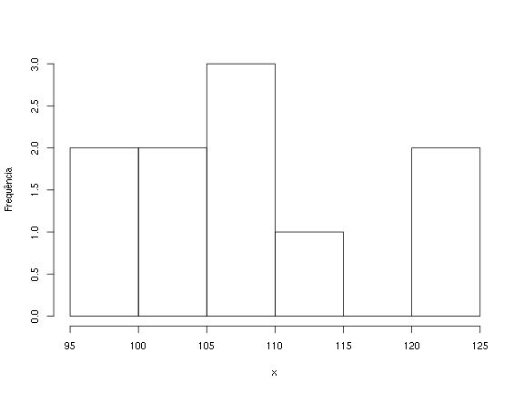

Slidify rautu
Utilização básica do Slidify
Fernando Mayer
Instruções
O Slidify ajuda a criar, customizar e compartilhar documentos
HTML5 dinâmicos, interativos e elegantes usando R Markdown.
Instalando o Slidify
O Slidify não é um pacote do CRAN, por isso precisa ser instalado
diretamente da sua página de desenvolvimento no
GitHub. A maneira mais fácil é
utilizar a função install_github() do pacote devtools. (O devtools
está no CRAN, e pode ser instaldo normalmente com
install.packages()), por exemplo
install.packages("devtools", dependencies = TRUE)
Além do pacote slidify, também é necessário instalar o
slidifyLibraries que contém diversos arquivos de configuração
utilizados pelo Slidify.
library(devtools)
install_github("ramnathv/slidify")
install_github("ramnathv/slidifyLibraries")
O Slidify ajuda a criar, customizar e compartilhar documentos
HTML5 dinâmicos, interativos e elegantes usando R Markdown.
Criando um documento com Slidify
A maneira mais fácil de começar é usando a função author("<dir>") para criar
um "esqueleto" da apresentação de slides. Essa função irá fazer por padrão
- criar um diretório
"<dir>"para a apresentação - gerar e copiar os arquivos necessários para o "esqueleto"
- se você tiver o git instalado:
- inicializar um repositório do git
- mudar para o branch
gh-pages - comitar as alterações para o repositório
- abrir o arquivo
index.Rmdpara edição
Criando um documento com Slidify
Por exemplo,
library(slidify)
author("slidify-rautu", use_git = FALSE, open_rmd = FALSE)
vai criar um novo diretório slidify-rautu com os arquivos
utilizados pelo Slidify.
O argumento
use_git = FALSEé utilizado para que ele não crie um repositório do git (que é o padrão).O argumento
open_rmd = FALSEé para que o arquivoindex.Rmdcriado não seja aberto automaticamente pelo seu editor padrão.
O comando acima também irá mudar automaticamente seu diretório de
trabalho para o diretório recém criado slidify-rautu. Dentro desse
diretório está o principal (e possivelmente único) arquivo que você
precisará editar o index.Rmd.
O arquivo index.Rmd básico
---
title :
subtitle :
author :
job :
framework : io2012 # {io2012, html5slides, shower, dzslides, ...}
highlighter : highlight.js # {highlight.js, prettify, highlight}
hitheme : tomorrow #
widgets : [] # {mathjax, quiz, bootstrap}
mode : selfcontained # {standalone, draft}
---
## Read-And-Delete
1. Edit YAML front matter
2. Write using R Markdown
3. Use an empty line followed by three dashes to separate slides!
--- .class #id
## Slide 2
Básico
Dois # definem um título, e três um subtítulo (veja este arquivo fonte)
Os slides são separados por ---
Pular uma linha define um novo parágrafo
Todas as marcações do Markdown são válidas
Marcações em HTML também são válidas
Processando o arquivo com Slidify
Após adicionar o conteúdo desejado, é hora de processar o arquivo
index.Rmd pelo Slidify no R:
slidify("index.Rmd")
Esta função vai gerar os arquivos index.md (a conversão de R Markdown
para Markdown puro) e index.html.
- Como é um arquivo estático, você pode abri-lo diretamente no navegador para ver o resultado.
À medida que for editando o arquivo index.Rmd e usando a função
slidify("index.Rmd"), você pode ir atualizando a página do arquivo
index.html
Como o Slidify funciona?
O Slidify ajuda a criar, customizar
e compartilhar documentos HTML5 dinâmicos, interativos e elegantes
usando R Markdown.
Customização
O Slidify é altamente modular e customizável.
Existem várias formas de customização:
- Frameworks (tipos de slides)
- Layouts (CSS, ...)
- Widgets (MathJax, quiz, ...)
Mais detalhes sobre customização podem ser encontrados em http://slidify.org/customize.html
Um detalhe: equações matemáticas com MathJax
O Slidify usa o MathJax para renderizar equações escritas em LaTeX
A distribuição normal é definida por
\[ f(x;\mu,\sigma^2) = \frac{1}{\sigma\sqrt{2\pi}} e^{ -\frac{1}{2}\left(\frac{x-\mu}{\sigma}\right)^2 } \]
foi escrito como
$$
f(x;\mu,\sigma^2) = \frac{1}{\sigma\sqrt{2\pi}}
e^{ -\frac{1}{2}\left(\frac{x-\mu}{\sigma}\right)^2 }
$$
Figuras
Figuras podem ser inseridas a partir de links ou diretórios locais
O logo do R

Tabelas
Tabelas podem ser escritas dessa forma
Caracter | Permissão
---------|----------
`r` | Permissão de leitura (*read*)
`w` | Permissão de escrita (*write*)
`x` | Permissão de execução (*execute*)
`-` | Permissão desabilitada
Para gerar o seguinte resultado
| Caracter | Permissão |
|---|---|
r |
Permissão de leitura (read) |
w |
Permissão de escrita (write) |
x |
Permissão de execução (execute) |
- |
Permissão desabilitada |
O Slidify ajuda a criar, customizar
e compartilhar documentos HTML5
dinâmicos, interativos e elegantes usando R Markdown.
Publicando a apresentação online
Uma parte fundamental do conceito de produzir slides em HTML é o fato de poder compartilhar apenas um link para a apresentação e ela aparecer diretamente no navegador sem a necessidade de baixar arquivos e abri-los em programas externos.
As apresentações geradas pelo Slidify podem ser compartilhadas por três mecanismos diferentes:
Em todos os casos, usaremos a função publish() com algumas
modificações. Veja ?publish para mais informações.
Publicando pelo Dropbox
A apresentação gerada pelo Slidify pode ser publicada através do
diretório Public do seu Dropbox.
Para isso basta especificar um nome de diretório que será criado dentro
de ~/Dropbox/Public. Aqui, por exemplo, manti o mesmo nome
slidify-rautu.
Passamos para a função publish() o nome do diretório e o
argumento host = "dropbox"
publish("slidify-rautu", host = "dropbox")
que irá criar dentro do seu Dropbox o diretório
~/Dropbox/Public/slidify-rautu com os arquivos necessários para gerar
a apresentação.
Depois disso, basta entrar na sua conta no Dropbox e
copiar o link público apenas do arquivo index.html.
Publicando pelo RPubs
O RPubs é um serviço gratuito mantido pelo RStudio, e serve basicamente para hospedar apresentações e outros documentos gerados com R markdown para HTML.
Embora seja uma ferramenta embutida e construída especificamente para o RStudio é possível publicar documentos do Slidify neste serviço.
publish("slidify-rautu", html_file = "index.html", host = "rpubs")
Com esse comando, uma página irá abrir automaticamente no seu navegador. Você precisa ter uma conta já cadastrada no RPubs ou preisará se registrar antes de conseguir publicar a apresentação.
NOTA: no RStudio esse processo é mais automático
Publicando pelo GitHub
O mecanismo padrão do Slidify para hospedar as apresentações é através do GitHub. Para isso é necessário ter uma conta nesse serviço, e antes de começar a usar o Slidify é interessante criar um repositório para a apresentação no GitHub.
Siga as instruções da página de ajuda do GitHub ou veja o git-rautu.
Para usar o GitHub com o Slidify, é necessário voltar no início, e usar
a funcão author() com o argumento padrão use_git = TRUE
author("slidify-rautu-git", use_git = TRUE, open_rmd = FALSE)
Para mais detalhes de como configurar o GitHub para hospedar apresentações do Slidify veja a seção específica do README do slidify-rautu.
O Slidify ajuda a criar, customizar
e compartilhar documentos HTML5 dinâmicos, interativos e elegantes usando R
Markdown.
Códigos do R
Conteúdo dinâmico implica que gráficos, tabelas e outros resultados
podem ser gerados dinamicamente usando códigos do R, usando o pacote
knitr.

Códigos do R
Códigos podem ser inseridos de maneira similar ao knitr para \(\LaTeX\), mudando apenas a forma como os códigos são declarados. Aqui são utilizados os fenced blocks ao invés dos chunks para gerar os resultados no R.
Por exemplo, o bloco
```{r}
(x <- rnorm(10, 100, 15))
```
vai gerar o seguinte resultado
(x <- rnorm(10, 100, 15))
## [1] 104.83477 106.95095 99.55128 109.66645 109.75745 111.36069 104.23999
## [8] 121.64682 120.47687 97.17345
Gráficos
Os gráficos gerados pelo R são automaticamente incluidos, por exemplo
hist(x, main = "", ylab = "Frequência")

Slidify e Knitr
Todas as opções de chunks do Knitr também são válidas para o Slidify. Por exemplo, no gráfico anterior foi utilizado
```{r grafico, fig.width=8, fig.height=6}
hist(x, main = "", ylab = "Frequência")
```
Veja as opções em http://yihui.name/knitr/options
MotionPlot com googleVis
library(googleVis)
M1 <- gvisMotionChart(Fruits, idvar = "Fruit", timevar = "Year")
print(M1, tag = 'chart')
MotionPlot com googleVis
O Slidify ajuda a criar, customizar
e compartilhar documentos HTML5 dinâmicos, interativos e elegantes usando R
Markdown.
Interativo
O Slidify usa um "widget" para adicionar interatividade aos slides
No YAML:
---
widgets: [bootstrap, quiz]
---
--- &radio
## Question 1
What is 1 + 1?
1. 1
2. _2_
3. 3
*** .hint
This is a hint
*** .explanation
This is an explanation
---
Question 1
What is 1 + 1?
- 1
- 2
- 3
This is a hint
This is an explanation
Gráficos interativos com rCharts
library(rCharts)
haireye = as.data.frame(HairEyeColor)
n1 <- nPlot(Freq ~ Hair,
group = 'Eye',
data = subset(haireye, Sex == 'Male'),
type = 'multiBarChart'
)
n1$print('chart1')